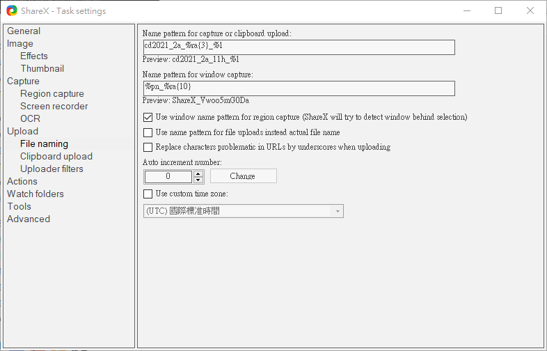

cmsimde <<
Previous Next >> W5
W4
W4 2a stage1 自評表:
http://c.kmol.info:8000/0sbqt6glle0n (只有在取資料當下有效, 內容將隨即 copy 至成績登記倉儲)
W4 2b stage1 自評表:
(只有在取資料當下有效, 內容將隨即 copy 至成績登記倉儲)
各組上課時只能使用 Browser 簡報, 並以 ShareX 分組錄影, ShareX Task settings-Upload-File naming 則採 cd20212a%ra(3)_%i 設定, 第一組簡報前按下 Shift + Print Scrn 後開始錄影, 結束時再按下 Shift + Print Scrn 則綠影檔案將存為 cd20212a三個亂數字元_1.mp4, 之後會將各班所有 mp4 以 sftp 傳至 http://c.kmol.info/downloads 目錄下, 各組再自行將影片 upload 至各分組組員的 gm 帳號對應 Youtube, 並嵌入各分組的網站中.
但是,
由於 File naming 將原本應該是:
的 %i 誤植為 %1 如下:

因此http://c.kmol.info/downloads/2021-03_2a_stage1.7z 壓縮檔中只能憑藉檔案建立的時間進行排序, 於是衍生出下列問題:
該如何對各組簡報的 .mp4 檔案進行排序改名? 採手動? 以程式進行?
請 stage1 中各組根據上述情況提供解決方案. 具體要求如下:
對2a 各組的 .mp4 檔案進行改名, 將各檔案中的 %1 依照順序改為 1, 2, 3, 4 依此類推, 並且在分組網頁中列出一個表格, 列出各組簡報所花費的時間.
討論:
目前因為只有 23 個 .mp4 檔案, 因此採用手動改名或逐一打開檔案計算每一影片檔案的簡報時間, 不至於太過繁雜, 但若檔案數增加至 230 或 2300 個, 決定採用手動改名與計算各組簡報時間的組別, 是否仍能夠接受使用手動處理與數位檔案有關的流程?
傳統汽車與電動汽車零件數比較, 總零件數多達上萬件, 若需要進入各零組件擷取相關資料或進行特定資料更動, 就符合上述以程式方法處理大量文字檔或數位檔案的情境:
rename_according_to_file_time.py
https://docs.python.org/3/library/pathlib.html
pathlib_doc.pdf
Pathlib-Cheatsheet.pdf
iterdir(): Iterate over the files in this directory. Does not yield any result for the special paths '.' and '..'.
https://realpython.com/python-for-loop/
https://www.w3schools.com/python/python_iterators.asp
深入了解 Python iteration
import os
from pathlib import Path
# put this file outside 2021-03_2a_stage1 directory
files = []
# directory name
dname = "2021-03_2a_stage1"
# iterdir() iterate over the files in directory
paths = sorted(Path(dname).iterdir(), key=os.path.getmtime)
for i in paths:
#os.fspath() eturn the file system representation of the path
files.append(os.fspath(i))
#print(files)
i = 0
for fpath in files:
# original file name is fname
i += 1
# new file name
npath = os.path.join(dname, "cd2021_stage1_2a_g" + str(i) + ".mp4")
#print(npath)
os.rename(fpath, npath)
get_video_duration.py
https://github.com/Zulko/moviepy
https://zulko.github.io/moviepy/
# pip install moviepy
import os
from moviepy.editor import VideoFileClip
# Converts into more readable format
def convert(seconds):
hours = seconds // 3600
seconds %= 3600
mins = seconds // 60
seconds %= 60
return hours, mins, seconds
for dname, dirs, files in os.walk("2021-03_2a_stage1"):
for fname in files:
vName = os.path.join(dname, fname)
clip = VideoFileClip(vName)
hours, mins, secs = convert(clip.duration)
print(fname + "組:", str(int(mins)) + "分", str(int(secs)) + "秒")
cmsimde <<
Previous Next >> W5